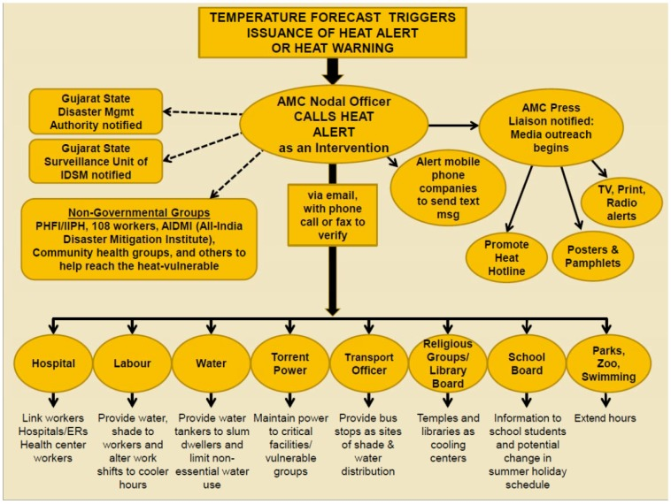

4 Week 4-Policy
4.1 Summary
Ahmedabad’s Heat Action Plan (HAP) is a comprehensive early warning system and preparedness plan for dealing with extreme heat events. This plan aims to improve preparedness, information sharing and response coordination through immediate and long-term actions to reduce the health impacts of extreme heat on vulnerable populations.
In May 2010, Ahmedabad experienced a major heat wave, resulting in an additional 1,344 deaths. This heat wave serves as a wake-up call for action, preparedness and community outreach across government agencies with the goal of saving lives. The Ahmedabad Municipal Corporation (AMC) prepared its first heat action plan in 2013 in collaboration with domestic and international academic experts and drawing on global best practices.
The Heat Action Plan aims to implement four key strategies:
Build public awareness and community outreach: Communicate the risks of heat waves through media and information materials and implement measures to prevent heat-related illness and death. This includes the use of modern media such as SMS, email, radio and mobile applications to disseminate information, especially to vulnerable populations.
Activate early warning systems and interagency coordination: Create formal communication channels to alert government agencies, weather centers, health officials, hospitals, emergency responders, community groups, and the media about predicted extreme heat.
Enhancing the Capacity of Healthcare Professionals: Focus on the training of primary medical staff and other medical and community health workers to enable them to effectively prevent and manage heat-related cases to reduce mortality and morbidity.
Reducing heat exposure and promoting adaptation measures: Increase advocacy and communication on preventive measures, drinking water and heat escape spaces by developing maps of high-risk areas in the city, working with NGOs, and expanding outreach to the city’s most vulnerable communities communication.
This plan is not only India’s first comprehensive response plan to face extreme heat, but also provides a guide for other cities and regions to take precautionary measures such as heat action plans when the weather becomes increasingly hot and extreme. At the same time, countless lives are saved.
4.2 Application
In order to promote better implementation of HAP, I hope to collect land surface temperature (LST) data and normalized difference vegetation index (NDVI), urban heat island detection data and water body mapping data to draw a high temperature vulnerability map. In the process :
Land surface temperature (LST) data can be obtained from satellites such as the Moderate Resolution Imaging Spectroradiometer (MODIS) on the Terra and Aqua satellites or the Land Surface Temperature Monitoring (LSTM) mission of Copernicus Sentinel-3.
The Normalized Difference Vegetation Index (NDVI) is derived from MODIS or Copernicus Sentinel-2 satellite data and measures the density and health of vegetation. NDVI is critical for assessing areas with lower vegetation cover, which may be more susceptible to heat waves due to a lack of cooling provided by plant transpiration.
Urban heat island (UHI) detection, primarily with the help of high-resolution satellite images (such as those from the Landsat series or Copernicus Sentinel-2) can be used to map urban areas and detect UHI impacts. By comparing daytime and nighttime temperature changes, areas with significant urban heat island impacts can be identified, highlighting areas where urban populations are at greater risk during heat waves.
Water body mapping. Water is a potential natural cooling resource. The availability and seasonal changes of water bodies in and around urban areas can be mapped through satellite data such as Landsat or Sentinel-2.
Subsequently, I hope to integrate the above various satellite data sets for a comprehensive spatial analysis. GIS (geographic information system) tools and spatial analysis methods can be used to overlay, compare and correlate different data layers to identify areas with high surface temperatures, low vegetation cover, and significant and limited urban heat island effects. Enter a body of water.
Finally the heat vulnerability index (HVI) was developed. HVIs are constructed for each region in Ahmedabad using integrated satellite data within a GIS framework. The index will incorporate environmental and spatial factors that contribute to thermal vulnerability, providing a risk assessment by region.
4.3 Reflection
Every major policy is introduced to solve imminent practical problems, and for high temperature hazards, the use of remote sensing technology can perfectly complement the technical deficiencies and promote policy implementation. In fact, Ahmedabad has implemented many measures to avoid heat hazards, such as using extreme heat warning systems. The early warning system is designed to generate probabilistic predictions of maximum temperatures and the probability of temperatures reaching specific critical thresholds based on group consensus based on analysis of mortality and temperature data. Forecasts are generated 7 days in advance and sent to AMC nodal officers via email as shown below.

This early warning system worked well in the first year of policy implementation, but then some problems were discovered, such as the possibility of inaccurate predictions, which requires more accurate technology to improve. I think the method I proposed has a certain degree of rationality and It is feasible, and its successful experience is very suitable for promotion throughout India, which is suffering from high temperature hazards.